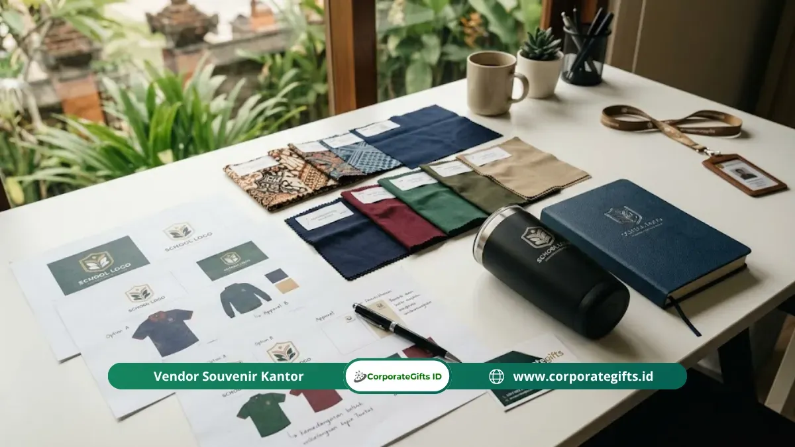

Corporate Gifts ID - Souvenir mitra sekolah yang tepat dipilih berdasarkan lima pertimbangan strategis utama: segmentasi tingkat kemitraan, anggaran per penerima, mutu ketahanan material, relevansi fungsional bagi instansi mitra, serta desain identitas visual sekolah yang proporsional. Kelima faktor ini perlu diintegrasikan secara menyeluruh agar cinderamata yang diserahkan tidak menjadi produk generik yang cepat dilupakan, melainkan menjadi simbol kehormatan yang mempererat hubungan kelembagaan jangka panjang.
Panduan ini dirancang khusus untuk koordinator hubungan masyarakat (humas), bagian kerja sama institusi, maupun staf pengadaan barang sekolah agar dapat merumuskan pengadaan souvenir kantor dan cinderamata pendidikan yang bernilai guna tinggi, tertib anggaran, serta memberikan impresi profesionalisme yang kuat.
Poin Kunci Pemilihan Souvenir Mitra Sekolah:
- Representasi Nilai: Cinderamata sekolah adalah cerminan reputasi dan standar mutu tata kelola lembaga di hadapan mitra dunia usaha dan industri (DUDI).
- Segmentasi 3 Tingkat: Bedakan peruntukan hadiah antara mitra strategis utama (MoU bernilai besar), mitra aktif, dan mitra pendukung.
- Kualitas Bahan Utama: Lebih baik memberikan satu item berkualitas tinggi (seperti tumbler SUS 304 atau plakat kristal) daripada banyak item murah yang mudah rusak.
- Branding Minimalis: Hindari mencetak terlalu banyak teks; gunakan logo vektor beresolusi tinggi dengan komposisi yang seimbang dan berkelas.
- Timeline Pengadaan: Lakukan pemesanan minimal 3 hingga 4 minggu sebelum penyerahan untuk menjamin ketersediaan sampel proofing.
Mengapa Pemilihan Souvenir Mitra Sekolah Tidak Boleh Sembarangan
Souvenir mitra sekolah bukan sekadar bingkisan seremonial penutup acara. Dalam ekosistem pendidikan modern, produk ini bertindak sebagai representasi fisik dari budaya mutu, dedikasi, dan profesionalisme sekolah di mata pimpinan instansi mitra, universitas rekanan, maupun perusahaan industri tempat peserta didik magang.
Souvenir yang diproduksi secara asal-asalan - seperti cetakan logo yang miring, bahan yang mudah terkelupas, atau kemasan yang ringkih - dapat secara langsung mengikis persepsi positif yang telah dibangun susah payah melalui rapat koordinasi formal berbulan-bulan.
Sebaliknya, pemberian cinderamata yang dirancang dengan cermat mampu memperkuat komitmen kolaborasi, mempermudah perpanjangan nota kesepahaman (MoU), serta menempatkan institusi sekolah Anda sebagai mitra pendidikan terpercaya yang menghargai sinergi jangka panjang.
Tabel Matriks Tipe Souvenir, Segmentasi Mitra, dan Alokasi Anggaran
Gunakan tabel matriks di bawah ini sebagai acuan penyusunan rencana anggaran biaya (RAB) pengadaan cinderamata sekolah berdasarkan kategori mitra:
| Kategori Mitra | Kriteria & Peran Mitra | Rekomendasi Produk Souvenir | Kisaran Budget per Unit | Kesan yang Dibangun |
|---|---|---|---|---|
| Mitra Strategis Utama (Tier 1) | Perusahaan penyerap lulusan utama, mitra MoU industri besar, donatur beasiswa utama | Plakat kayu/kristal eksklusif, premium executive gift set (pulpen metal + agenda kulit), hampers institusi | Rp150.000 - Rp350.000+ | Penghargaan tertinggi, prestisius, dan kemitraan jangka panjang |
| Mitra Aktif & Kolaborator (Tier 2) | Tempat magang/PKL reguler, narasumber guru tamu, sekolah jejaring mitra | Tumbler stainless SUS 304 custom grafir, flashdisk kartu OTG custom, buku agenda kerja rapi | Rp75.000 - Rp150.000 | Fungsional, modern, dan sangat berguna untuk aktivitas kerja kantor |
| Mitra Pendukung & Tamu Kunjungan (Tier 3) | Peserta studi banding, sponsor event pendukung, tamu audiensi awal | Tote bag kanvas tebal, paket pulpen stylus custom + blocknote spiral, gantungan kunci kulit sintetis | Rp35.000 - Rp75.000 | Ramah, profesional, rapi, dan efektif memperkenalkan profil sekolah |

Koleksi souvenir mitra sekolah pilihan: plakat kayu elegan, tumbler custom grafir laser, dan paket seminar kit resmi.
5 Tips Utama Memilih Souvenir Mitra Sekolah
Berikut adalah langkah-langkah sistematis yang dapat diaplikasikan tim pengadaan sekolah guna menghasilkan cinderamata yang optimal:
1. Tentukan Segmentasi Mitra Terlebih Dahulu
Hindari menggunakan konsep one-size-fits-all. Memetakan mitra ke dalam tiga tingkatan kontribusi membantu tim keuangan sekolah mendistribusikan alokasi anggaran secara proporsional. Mitra pimpinan industri yang memberikan fasilitas laboratorium vokasi tentu memerlukan cinderamata apresiasi yang berbobot lebih tinggi dibandingkan peserta kunjungan umum.
2. Tetapkan Anggaran per Penerima Secara Realistis
Hitung anggaran pengadaan cinderamata dengan basis biaya per kepala penerima (cost per recipient), bukan sekadar pagu gelondongan. Menetapkan standar Rp75.000 hingga Rp120.000 untuk kategori fungsional memastikan vendor dapat menggunakan bahan baku standar mutu industri tanpa menurunkan kualitas jahitan atau teknik sablon.
3. Prioritaskan Kualitas Material di Atas Kuantitas Fitur
Satu unit cinderamata dengan material unggul - seperti tumbler stainless SUS 304 anti-karat atau pulpen metal grafir laser - jauh lebih bernilai di mata penerima daripada paket bingkisan besar yang berisi barang-barang plastik tipis yang mudah patah saat pertama kali digunakan.
4. Rancang Identitas Sekolah dengan Elegan
Kesan institusi yang berwibawa hadir melalui tata letak visual yang bersih. Cantumkan lambang resmi sekolah dalam proporsi wajar di bagian depan atau sudut produk. Hindari memasukkan seluruh nomor telepon, alamat lengkap, dan deretan visi-misi pada satu permukaan souvenir, karena detail tersebut dapat dicantumkan pada kartu ucapan pendamping.
5. Pesan Jauh Sebelum Tanggal Acara Resmi
Produksi cinderamata berkualitas memerlukan tahapan proofing sampel, kalibrasi mesin grafir/UV, dan penjahitan presisi yang memakan waktu 7 hingga 21 hari kerja. Menjadwalkan pesanan 3-4 minggu sebelum hari seremonial menghindarkan institusi dari biaya kirim kilat darurat dan risiko cacat produksi akibat pengerjaan terburu-buru.
Hal Teknis yang Sering Terlewatkan dalam Pengadaan Sekolah
Untuk memastikan kelancaran administrasi dan penerimaan cinderamata, perhatikan aspek teknis berikut:
- Kesiapan File Vektor Master: Sediakan file logo sekolah dalam format vektor (.AI, .CDR, atau .PDF vector) agar hasil cetak grafir laser dan sablon UV tidak buram atau pecah.
- Kemasan Eksklusif per Unit (Individual Box): Pastikan setiap souvenir dilengkapi boks kemasan berpita atau hardbox die-cut foam agar rapi dan aman saat prosesi penyerahan cinderamata.
- Kartu Apresiasi Personal: Sisipkan kartu ucapan terima kasih bertanda tangan kepala sekolah atau yayasan untuk menambah ikatan emosional bagi penerima.
- Kelengkapan Dokumen SPJ & Faktur Pajak: Pilih vendor resmi yang menyediakan faktur pajak, kuitansi resmi, dan nota dinas untuk mempermudah pelaporan pertanggungjawaban dana BOS/BPOPT.
Pertanyaan Seputar Souvenir Mitra Sekolah (FAQ)
Kesimpulan Praktis dan Konsultasi Souvenir Sekolah
Memilih souvenir mitra sekolah yang berkesan bukan sekadar mengejar harga termahal, melainkan menciptakan keseimbangan antara ketepatan fungsi, kualitas material yang tahan bertahun-tahun, serta identitas institusi yang terpasang anggun. Souvenir yang dipersiapkan dengan baik adalah instrumen diplomasi kelembagaan yang bernilai strategis tinggi.
Konsultasikan kebutuhan cinderamata sekolah dan paket seminar kit edukasi bersama tim desainer di Corporate Gifts ID untuk memperoleh sampel mockup digital gratis, rekomendasi bahan bersertifikat, dan skema penawaran B2B resmi.